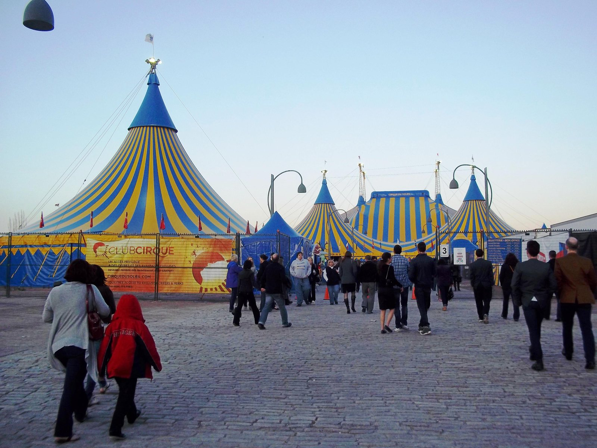
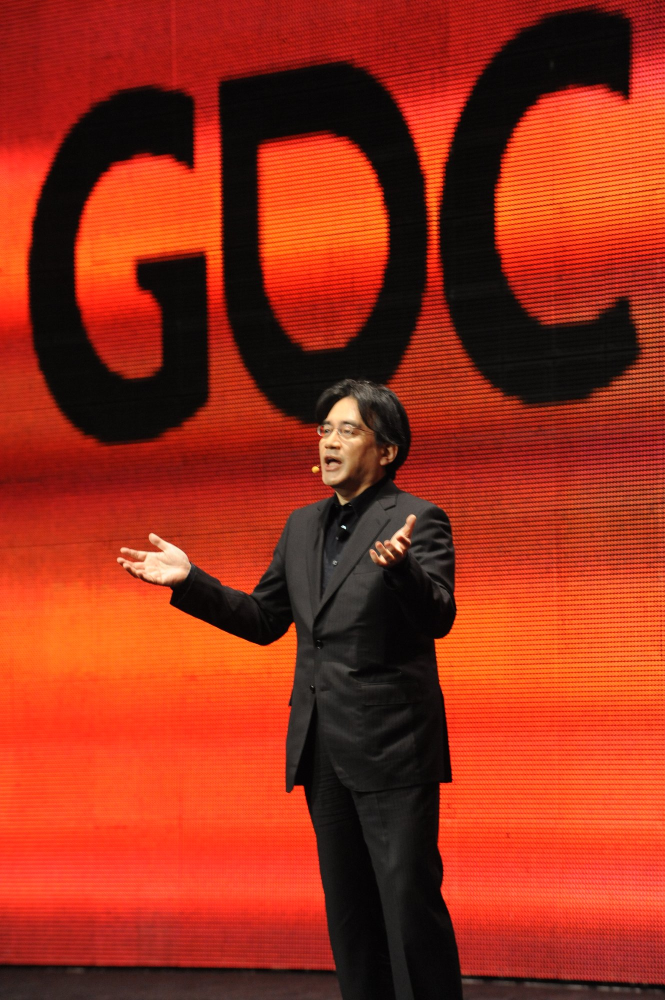
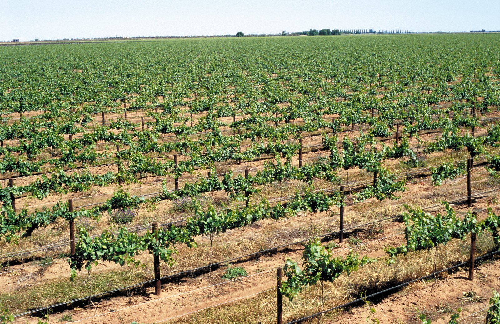
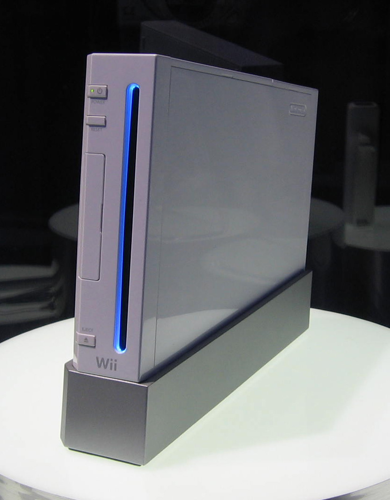
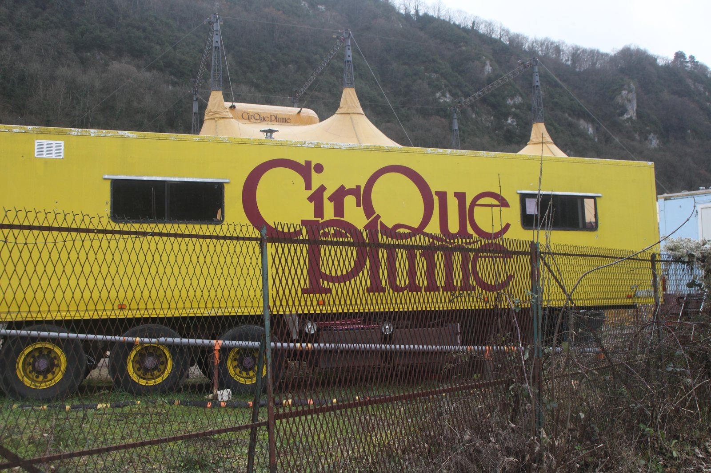

Saturday · Business
: rebuild what buyers pay for, instead of fighting over the same buyers
and ’s 2004 essay: stop matching rivals on the same factors in a crowded industry. Reconstruct the offer. , ’s , and ’s are the cases used here — only for facts named public pages actually state.

{kind=link}
This is a strategy-framework lesson, not a company biography and not a promise that “creating a new market” always works. (1984) and (U.S. launch, July 2001) did their work before the October 2004 essay named . and reconstructed those moves as exhibits. ’s stated an “” strategy in 2003, in his own words, before the essay; the 2013 teaching case by , , and reads the through their later grid. Claims about revenue multiples, case volumes, and ticket or console prices are taken from the named public pages cited in Read. Operating statistics those pages do not state are omitted. “” and “” are the authors’ metaphors. After the first explanation they are treated as labels for a reconstructed offer versus a crowded fight, not as scenery. The earlier Saturday capsule is named only where the cost-versus-differentiation trade-off is the thing this essay tries to break. Southwest Airlines is not reused as a case.
Select any words, or tap a dotted term.
- 1984 Cirque du Soleil and a group of street performers founded in Quebec. The 2004 essay uses this company as its opening exhibit.
- 1997 Value Innovation and , “,” , January–February 1997. The earlier public statement: a leap in buyer value and a lower cost structure at the same time.
- July 2001 [yellow tail] in the U.S. Australia’s introduced into the U.S. market. The / case abstract: first-year plan 25,000 cases; first-year sales nine times that.
- 2003 Expansion of the Gaming Population , speaking later at the (7 December 2006): set this as its basic strategy in 2003, after the Japanese console market declined from 1997 to 2003. The was the first machine built for it.
- Oct 2004 The HBR essay and , “,” , October 2004. is the opening case. The book of the same title followed in 2005.
- 2005 25 million cases By the end of 2005, the case abstract says, ’s cumulative sales were tracking at 25 million cases. The brand is described there as the fastest-growing in the history of the U.S. and Australian wine industries.
- Nov–Dec 2006 Wii ships Bloomberg, 13 September 2006: priced at $249.99 in the U.S. (25,000 yen in Japan), on sale 19 November in the U.S. and 2 December in Japan. ’s stated goal: enlarge the population of people who play, not out-horsepower and .
- 2013–15 Cases and a second edition , , and Hunter, (, 2013). Expanded edition of , 2015. “,” , March 2015.
The problem
When every rival improves the same list, the industry shrinks around that list
A crowded industry is easy to describe and expensive to live in. The firms already in it watch one another. They add the same features, bid for the same star performers or the same shelf talkers, and call the result strategy. Buyers who already like the category get a slightly better version of what they had. Buyers who never liked the category still have no reason to start. Costs rise because the shared list is costly to climb. Demand does not rise with it. ’s treated that bind as a choice: be cheaper, or be different, or do one of those in a narrow slice. The earlier Saturday capsule in this archive, , is the lesson that stays with , judo, and disruption. This Saturday is the other claim: some firms stop climbing the shared list. They drop pieces of it, add pieces the list never included, and sell the result to people the industry had not been counting as customers.
and , professors of strategy at in , gave that move a pair of names. In “” (, January–February 1997) they called the mechanism : a leap in what buyers get, and a lower cost structure, in the same design. In “” (, October 2004) they named the setting. A is the existing industry, rivals cutting one another on the same factors. A is an offer whose demand is not already being fought over. The colors are theirs. The useful content is not the palette. It is the instruction to redraw the list of factors before you spend another year winning a point of share.
{kind=link}
The framework
Four questions, a grid, and a line that does not copy the industry’s line
The 2004 essay’s method is a short list of questions, later drawn as the grid — the on the authors’ public tools page. Which factors that the industry takes for granted should be eliminated? Which should be reduced well below the industry standard? Which should be raised well above it? Which factors that the industry has never offered should be created? Eliminate and reduce cut cost. Raise and create lift what a new kind of buyer will pay for. If those four answers are real, the firm is no longer trying to be a cheaper circus or a more prestigious wine or a faster console. It is selling a different object. and call the picture of that object a : the industry’s factors along the bottom, the level of each factor up the side, each offer a line. A reconstructed offer is a different line. It is not a higher copy of the old one.
Two warnings belong next to the grid, not at the end. First, the famous cases mostly predate the essay. was founded in 1984. reached American shops in July 2001. The October 2004 article is a reconstruction of moves already made. is the partial exception: ’s own 2003 phrase was “,” stated again in his 7 December 2006 outline for the . , , and then wrote as an case in 2013. was not holding their grid in 2003. He was naming a shrinking Japanese market and a product path that did not chase horsepower. Second, “” is the people-word that makes the grid less abstract. The useful question is not what current buyers wish were slightly better. It is why a larger group refuses the category — confusion, price, intimidation, a sense that the product is for someone else — and whether an offer can be built that those people will actually use.
is the load-bearing phrase from 1997, and it is stricter than it sounds. It is not a new gadget. It is not a brand campaign laid on top of the old cost structure. It is a change in the activity system that removes expensive factors buyers had been taught to expect and puts money into factors they did not have. That is how and argue they escape ’s trade-off. Whether a given firm actually did both things at once is a fact question for each case. The grid is a way to ask the question. It is not a certificate.
The cases
Three reconstructed offers, used only for the facts the sources state
W. Chan Kim
INSEAD, Fontainebleau
Co-author of the 1997 and 2004 essays and of . The public tools and the case abstracts used here are issued under his name and ’s. A free classroom portrait is not used in this capsule; the arguments are in the essays.
Renée Mauborgne
INSEAD, Fontainebleau
Co-author and co-director, with , of the . The method in this lesson — , the , the canvas — is theirs jointly. Later books (, 2017; , 2023) are named only as After.
Guy Laliberté
b. 1959
Quebec performer and co-founder. The 2004 lead calls him a onetime accordion player, stilt walker, and fire-eater, then CEO of a large Canadian cultural export. The photograph is later.
NASA / , 23 July 2009, . A spaceflight-participant briefing, not a 1984 street portrait.NASA / James Blair / public domain
{kind=link}

Satoru Iwata
1959–2015
’s president from 2002. The 7 December 2006 outline is the primary source for and “.” and ’s case is a 2013 reading of work he had already shipped.
at GDC 2011. Five years after the launch; the face of the 2003–06 strategy, photographed later.Official GDC / Flickr / Wikimedia Commons / CC BY 2.0
{kind=link}
is the 2004 essay’s opening case, and it has to be read as a reconstruction. The open page states the facts this lesson is allowed to use. Founded in 1984 by a group of street performers, had, at the time of the article, staged dozens of productions seen by some 40 million people in 90 cities. In twenty years, the essay says, it reached revenues that — “the world’s leading circus” — had taken more than a century to attain. The magazine summary adds a 22-fold revenue rise over the previous ten years, in an industry the authors describe as in long-term decline. Those are 2004 sentences. They are not a 2020s income statement.
The strategic content is the rebuilt list. Traditional circuses, in the essay’s account, had been benchmarking one another: more famous clowns, more impressive animal acts, more of the three-ring split that raised cost without changing what a night at the circus was. stopped trying to be a better circus of that kind. It dropped the animal menagerie — training, veterinary care, transport, insurance, and a growing public objection — and it did not buy circus “stars” as the thing a ticket was for. It kept clowns and acrobatics, wrote a through-line closer to theater, commissioned original music, and dressed the tent instead of abandoning it for a rented hall. Ticket prices moved toward theater prices. The new buyers, in this reading, were adults and corporate clients who had not been going to the circus. Quartz’s 2015 restatement follows the same outline and does not add a figure this lesson will invent. (Las Vegas, 1993), (1996), and O (, 1998) are later, checkable production titles. They show where the reconstructed circus was sold. They are not a second dataset.
is the wine case, and it is a grocery object, not a château story. The public abstract of — , , , , — states the setting and the volumes. In 2001 the U.S. wine trade was crowded, squeezed at distribution and retail, and still competing on factors that had barely moved in centuries: vineyard prestige, complexity, aging, the language of tannin and oak. In July 2001 Australia’s put into that market. The firm had expected to sell 25,000 cases in the first year. It sold nine times that. By the end of 2005, cumulative sales were tracking at 25 million cases. The abstract calls it the overall best-selling 750 ml red, ahead of Californian, French, and Italian brands, and the fastest-growing brand in the history of the U.S. and Australian wine industries. Those sentences are the case authors’. This lesson does not add a later supermarket rank.
The rebuilt list, on the official teaching pages, is blunt. stripped the factors wine had competed on — tannins, complexity, aging — and with them some of the working capital aging requires. It launched as two wines, a and a , so a shopper who did not speak wine was not asked to perform a cellar. It was sold as a social drink for people who otherwise bought beer or a ready-to-drink cocktail. , in a SmartCompany interview, says the same thing in operator language: he was not going after the existing wine-drinking market; the $5.99 slot had more volume than the $8.99 wine he had already tried; in New York was the distributor; the kangaroo-on-yellow label, in his account, rode a moment when Australia was easy to read in America after the . ’s first reaction, in that interview, was not enthusiasm. Distribution and a price point are part of the move. They are not a lesser footnote than the wallaby.

{kind=link}
The is the third case, and the primary voice is ’s, not ’s. On 7 December 2006, at the , he put the diagnosis in the company’s own English outline. The Japanese video-game market had declined from 1997 to 2003 while North America was still growing. He called the domestic pattern : games took too much time and energy, and the skill gap between a first-time player and a veteran had become too wide. Gorgeous graphics, he said, had reached a saturation point and would not enlarge the audience. In 2003 set “” as its basic strategy — products for anyone regardless of age, gender, or gaming experience, with the in-house lines “for 5 to 95 years old” and “the same start line.” The , with two screens, a touch screen, and a microphone, was the first machine. The was the second, a new play style for the living-room console.
Bloomberg’s 13 September 2006 piece, “: Want To Expand Games’ Appeal,” is the contemporaneous price-and-date source. The would sell for $249.99 in the United States (25,000 yen in Japan), on 19 November in the U.S. and 2 December in Japan. ’s line in that piece is that has a machine even a mother could love. ’s line is that the goal is to boost the population of gamers by making games for more people, against a market whose typical buyer was still being imagined as an 18-to-35-year-old man. In a May 2006 Associated Press interview, printed by the Orange County Register, said the race for horsepower and faster processing “don’t do anything to ask nongamers to play with a video game,” and that a controller bristling with buttons intimidated them. The 2013 case by , , and Hunter is a later classroom reading of those choices as an move aimed at . It is useful as their reading. It is not a 2003 memo.

{kind=link}
Same time elsewhere
Other troupes, other cellars, other ways to enlarge a player base
was not the only 1984 company that treated circus as theater without animals. was founded in France that same year. It belongs to , a current already underway in Europe: written shows, original scores, no menagerie, tents or rooms used as theaters. and other French companies followed. If is taught as a unique leap out of ’s industry, the French calendar is the correction. The reconstruction was a period style, not a patent. In China the same decades kept a different institution: state-trained acrobatic troupes, then commercial houses such as , the purpose-built arena that opened in 1999. That building is not “Asia’s .” It is evidence that acrobatic spectacle had another industrial history — training schools, municipal venues, tourist bookings — while and were writing in . The useful comparison is contemporaneous infrastructure, not a Western frame plus an Eastern peer.

{kind=link}
{kind=link}
Wine in 2001 was not only against or . and were already moving through the same New World export boom that carried Australian wine into American grocery aisles. is one branded reading of that boom — simple, fruit-forward, cheap to explain — not the boom itself. A that pretends the only alternative to French prestige was ’s wallaby is doing the West-plus-one trick this site refuses. The , the , the , and were all producing high-volume wine for buyers who did not want a lesson. ’s move was to name that buyer out loud and to stop apologizing to the trade for it.
Games in 2003–06 had another expansion path that did not run through ’s living room. In South Korea, online titles and had already pulled in players who did not own a Western home console. and later social and sports titles enlarged a population by the hour, in rented chairs, on a broadband network the Japanese home-console market did not use the same way. ’s crisis figure was a declining Japanese console business from 1997 to 2003. A Korean internet café in those years was not in that decline. The and the are not rivals in a case. They are two answers, in the same years, to the question of who gets to play and where the machine sits.
Limits
A reconstructed offer can be copied, and a metaphor is not a test
fill in. Once a reconstructed offer is visible, rivals can take the easy pieces — a motion stick, a fruit-forward wine at $6, a circus without animals — and bolt them onto the old system. That is the problem from the Saturday, in a new vocabulary. and ’s 2015 essay “” is their own later warning: managers slide back into competing on the industry’s existing factors because those factors are easy to measure. The ’s motion idea was later copied in other living rooms. did not remain the only cheerful Australian wine on an American shelf. ’s theater-circus was imitated by other troupes and by ’s own later, heavier slate of resident shows. The 2004 essay can describe a first move. It cannot keep a market empty.
There is also a hindsight problem the files already taught. and look like grid work after and write the grid. looks like their student after the 2013 case. The honest order is the other way: the companies moved; the professors named a pattern; classrooms then treat the pattern as a kit a firm can pick up in advance. Sometimes that kit helps a later team ask better questions about . Sometimes it becomes a slide that labels any successful product a and any failure a red one. Survivorship is the ordinary vice of strategy writing. This lesson keeps the dates visible so the vice is harder to miss.
’s claim against is the other limit. Eliminate and reduce can lower cost. Raise and create can make a different offer. Whether those four answers, in a real firm, actually break the trade-off — or merely hide a cheap product behind new language — is not settled by a color. A simple wine at $5.99 is also a cost position. A console that refuses high-definition chips is also a cost position. ’s theater ticket is also a differentiated price. The grid is still useful if it forces a team to name what it will stop doing. It is less useful if it is used to say that trade-offs were an illusion all along.
After
The books continued; the companies did not stay in 2004
and published in 2005 and an expanded edition in 2015. followed in 2017, in 2023. “” (, March 2015) is the later essay this lesson uses as a caution. grew into resident Las Vegas shows and a touring machine, then — years after the essay — into a leveraged entertainment group that had to halt live performance when a pandemic closed rooms. That later corporate history is not a 2004 fact and is not treated here as a secret ending hidden in the framework. became a permanent grocery brand and a much larger . ’s next console after the , the , is widely treated as a muddled follow-up; was still president for that launch. The 2003 sentence about enlarging the population outlived any one machine. The companies are evidence for a reconstructed offer. They are not saints, and they are not stuck on the year of the essay.
A question
A question to keep asking
If you list the factors your industry already fights on, which two would you drop because buyers who are not yet customers do not use them — and what evidence, not a color, would tell you that you had built a different offer rather than a cheaper copy?
Fun fact
The NASA portrait is from 2009, not from Baie-Saint-Paul
flew as a spaceflight participant on in 2009. NASA photographed him at a press conference on 23 July 2009, which is the portrait this capsule uses. That picture is a later biography fact. It is not evidence about 1984, and it is not a claim in the 2004 essay. Keep the street-performer founding and the spaceflight seat on different calendar lines.